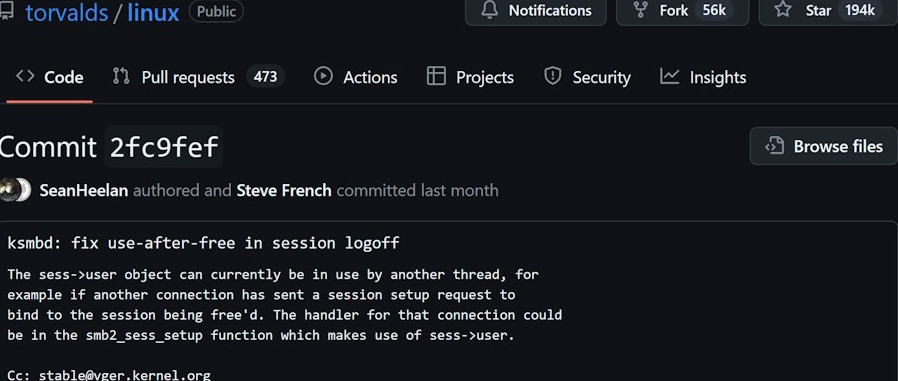
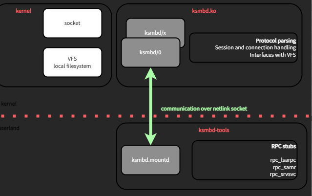
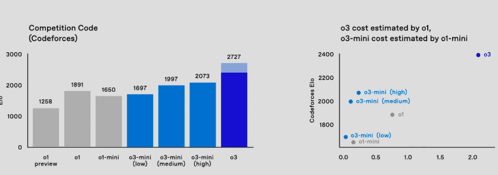

Découverte d’une faille critique dans le noyau Linux grâce à l’IA : Un tournant ?
28 Mai 2025, 16:41 CEST
Cyber
Comment l’IA d’OpenAI a surpassé Claude dans la détection de vulnérabilités critiques.
La semaine dernière, une découverte a secoué le monde de la cybersécurité.
Sean Heelan, un chercheur indépendant, a identifié une faille critique dans le noyau Linux (CVE-2025-37899).
Mais ce qui choque encore plus, c’est la manière dont il l’a trouvée : en utilisant le modèle o3 d’OpenAI.
Pendant que Claude Sonnet 3.5 et 3.7 échouaient à détecter cette vulnérabilité, o3 a repéré le problème avec une précision digne d’un expert humain.
Fascinant… et un peu inquiétant.
Voici comment tout s’est déroulé, et pourquoi cela pourrait marquer un tournant dans l’utilisation de l’IA pour la cybersécurité.
Une découverte inattendue dans ksmbd

À l’origine, Sean Heelan voulait faire une pause avec les grands modèles de langage (LLM).
Il s’est plongé dans un audit du module ksmbd, un serveur SMB3 intégré au noyau Linux.
Mais l’arrivée du modèle o3 d’OpenAI a ravivé sa curiosité.
En testant ses anciens scénarios de bugs sur o3, il a découvert la faille CVE-2025-37899 en seulement quelques requêtes.
Cette vulnérabilité, un bug de type use-after-free, peut provoquer une corruption de la mémoire et, dans certains cas, permettre l’exécution de code arbitraire.
Un problème sérieux, détecté grâce à l’IA.
o3 face à Claude : Une comparaison éloquente

Heelan ne s’est pas arrêté là. Il a comparé o3 avec Claude 3.5 et 3.7 sur une autre vulnérabilité, CVE-2025-37778.
Les résultats sont frappants :
- o3 : Détection réussie dans 8 cas sur 100.
- Claude 3.7 : Détection dans 3 cas sur 100.
- Claude 3.5 : Aucun succès.
Ces chiffres montrent qu’o3 ne se contente pas d’analyser le code statiquement.
Il comprend les interactions complexes entre threads et anticipe des scénarios d’exécution dangereux.
Une capacité qui le rapproche d’un analyste humain expérimenté.
Un cap franchi, mais à quel prix ?
Cette prouesse d’o3 marque un tournant dans l’utilisation des LLMs pour la cybersécurité.
Mais elle soulève une question cruciale : que se passe-t-il si cette puissance est utilisée à des fins malveillantes ?
Un modèle capable de détecter des failles aussi efficacement pourrait devenir un outil d’attaque redoutable.
On parle beaucoup d’IA défensive, mais l’IA offensive est une réalité à ne pas négliger.
Intégrée dans les mauvais outils, elle pourrait amplifier les cyberattaques.
La frontière entre protection et menace devient floue.
En résumé
L’IA, comme o3, redéfinit l’audit de sécurité logicielle.
Sa capacité à comprendre des dynamiques complexes est une avancée majeure.
Mais elle exige une vigilance accrue sur son utilisation.
La cybersécurité doit évoluer pour anticiper les abus potentiels.
Si tu as des retours ou des idées sur l’impact de l’IA dans la cybersécurité, partage-les !
Cette révolution ne fait que commencer.
Restons vigilants face à ces nouvelles possibilités.
🔁 Repostez si vous pensez que cette découverte mérite d’être connue.
P.S. Que penses-tu de l’utilisation des LLMs dans la cybersécurité ?